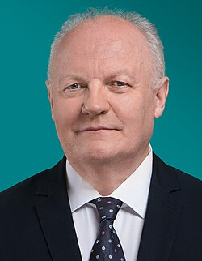

Orientation personnelle documentée
Souveraineté et alliances
Sortir de l’Union européenne, de l’euro et de l’OTAN est la priorité documentée de sa démarche. Les autres arbitrages ne se déduisent pas du seul Frexit.
Lire la source de cette synthèsePROFIL ET ORIENTATIONS · PRÉSIDENTIELLE 2027
Union populaire républicaine (UPR)

Photo : Union Populaire Républicaine · CC BY-SA 4.0 · Conditions de réutilisation .

Fondateur et président de l’UPR, il a été candidat à la présidentielle de 2017. Il défend la sortie de la France de l’Union européenne, de l’euro et de l’OTAN ; la presse rapporte une nouvelle candidature pour 2027.
Souverainisme / républicanisme souverainiste
Son projet central est de sortir la France de l’Union européenne, de l’euro et de l’OTAN, comme le rappelle 20 Minutes. Cette priorité à la souveraineté nationale justifie le repère souverainiste. Son parcours à droite ne permet pas, à lui seul, de déduire toutes ses positions économiques ou de l’assimiler au RN.
Définition et histoire de ce courantPROGRAMME · ÉBAUCHE
Ébauche évolutive : les programmes présidentiels complets pour 2027 ne sont pas tous disponibles. Cette page rassemble les orientations et propositions déjà documentées ; elle sera étoffée et vérifiée à mesure des publications de campagne, avec leurs sources, leur date et leur chiffrage lorsqu’il existe.
Orientation personnelle documentée
Sortir de l’Union européenne, de l’euro et de l’OTAN est la priorité documentée de sa démarche. Les autres arbitrages ne se déduisent pas du seul Frexit.
Lire la source de cette synthèseCette synthèse ne constitue ni un programme complet ni un engagement chiffré. Les huit rubriques de suivi sont l’économie, la sécurité, l’immigration, l’écologie, la fiscalité, le logement, l’Europe et l’international, et la laïcité.
Contexte partisan : les éléments ci-dessous décrivent le parti. Ils ne sont pas automatiquement des engagements personnels de François Asselineau. Les annonces individuelles seront distinguées des textes collectifs.
Économie et travail
Restituer des capacités nationales de décision monétaire et économique en quittant l’euro et l’UE. Le programme 2027 complet est annoncé comme à venir.
Sécurité et justice
La sécurité figure parmi les fondamentaux, mais la page consultée ne détaille pas un plan opérationnel complet.
Immigration et citoyenneté
Les fondamentaux annoncent de grands référendums, notamment sur l’immigration. Cela ne permet pas de présenter un résultat de référendum futur comme une politique déjà définie.
Écologie et énergie
La page annonce aussi une consultation sur le nucléaire : aucune décision détaillée sur le mix énergétique n’est inventée à partir de ce seul principe.
Europe et international
Positions personnelles de François Asselineau : les orientations du parti ne lui sont pas automatiquement attribuées. Ces repères datés seront complétés avec le programme de 2027.
Sortie de l’OTAN
La source de candidature rappelle son projet de sortie de l’Union européenne, de l’euro et de l’OTAN. Les autres volets diplomatiques ne sont pas déduits de cette priorité.
Position personnelle à documenter.
Position personnelle à documenter.
Position personnelle à documenter.
Position personnelle à documenter.
Position personnelle à documenter.
Une sortie du commandement intégré de l’OTAN n’est pas une sortie de l’Alliance. Une déclaration ancienne ou un texte collectif ne vaut pas programme personnel pour 2027. Une position non renseignée indique une limite documentaire.
Histoire, candidats et sources de Union populaire républicaine →
Photo : Union Populaire Républicaine · CC BY-SA 4.0 · Conditions de réutilisation .